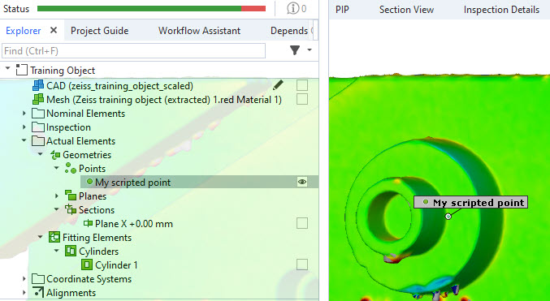

Scripted actuals

Scripted actual elements (short: scripted actuals), are scripted elements that refer to the actual, e.g. measured state of a geometrical object. Therefore, they appear in the “Actual Element” category of the GOM Inspect Element Explorer.
In this how-to, the creation of a very basic point element is presented to show how scripted actuals are developed by example.
Example: Simple offset point
Assume we want to create a scripted point. A point, whose position is just offsetted by a couple of millimeters from another point. Though the use of such element is clearly limited, it serves as an easy example on the general approach.
As explained in the previous chapter, at first we select the element type in the script properties. For our offset-point, we naturally choose “Actual element” -> “Point”.

Then, we write the code, which needs a dialog and a calculation function. Let’s begin with the dialog function.
dialog
1def dialog(context, params):
2
3 DIALOG=gom.script.sys.create_user_defined_dialog (dialog={ <Dialog JSON code>})
4
5 if 'x' in params:
6 DIALOG.i_x.value = params['x']
7 if 'base' in params:
8 DIALOG.point.value = params['base']
9
10 RESULT=gom.script.sys.show_user_defined_dialog (dialog=DIALOG)
11
12 params['x'] = DIALOG.i_x.value
13 params['base'] = DIALOG.point.value
14
15 context.name = 'My scripted point'
16 return params
As you can see, the function takes the parameters context and params. Although the context object has several members, for now we will only use it to set a name for our scripted element (line 15). The main objective of our dialog function is to fill the second parameter, the params map (python type: dictionary).
In this case, we want to ask the user on which point our offset-point should be based on, and by how much the point should be offset. We create a user dialog and in the dialog editor, we add two input widgets:
Input -> Decimal: a decimal widget for the offset inputSelection -> Selection element: an element widget to select a point-like element

It’s important to note the widgets’ “Object name”s, so we can adress them in the code. Second, it’s important to set the “Type” of the selection element widget to Any point, so the user gets only the choice between elements that offer some point information.
When finished with dialog creation, we have our desired JSON code, which we can use as a parameter for the gom.script.sys.create_user_defined_dialog command (line 3). This gives as a DIALOG handle, which we will use further.
In case the dialog function is called from “Edit creation parameters”, e.g the user wants to change parameters after the element was already created, the params map is not empty. Instead, it holds the command parameters from the last creation. Hence, we should prefill our DIALOG’s widgets with the current values (see line 5 to 8). We can access the values of the widgets using the dialog handle and widgets’ object names: DIALOG.<widget name>.value.
Then, the dialog is shown to the user (line 10) and afterwards the results are collected (lines 12/13). After setting the element name, the parameters are returned. The framework then continues to call the calculation function.
calculation
In most applications, the tricky part probably comes now, where you could solve complex mathematical problems to compute your final element values necessary. However, in this example, things are easy.
1def calculation(context, params):
2
3 base = params['base'].center_coordinate
4 context.result[0] = (base.x + params['x'], base.y, base.z)
5
6 return True
The parameters of the calculation function are again context and params. From the params, we can access the selected point element using params['base'].
What we get is a gom.Reference to the element the user selected. We can now access the element’s properties, such as the center_coordinate.
Finally, we have to fill the context.result member. Depending on the scripted element type we want to create, it takes different formats.
As described in the Scripted elements API reference, a point element takes a coorinate tuple (x, y, z).
The result for stage 0 (we ignore other stages for this example) is set in line 4. We return True to indicate the computation went fine.
Running the example
That’s it! When we now run the example, the dialog appears, we can select base point and offset value.

After clicking “OK”, a “My scripted point” element is created and visible in the explorer.
See also
The code of the example can also be found in the Python API Examples add-on, which contains many more examples, along with Example documentation.
Further reading
Now you’ve grasped the basic concept of scripted actuals. However, there are some relevant topics missing to complete a fully-integrated experience of a scripted actual. E.g. you might have noticed that we did not cover:
Error handling during calculation
Letting the user choose an element name in the dialog
Handling multiple stages
…
To learn about these mechanisms, you should take a look at the more sophisticated examples of our Python API Examples add-on, documented here.